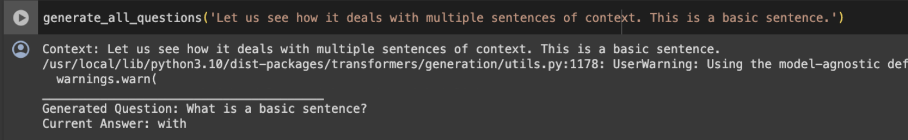
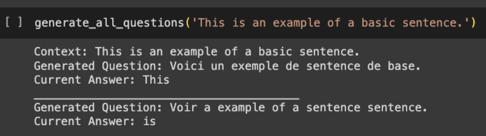
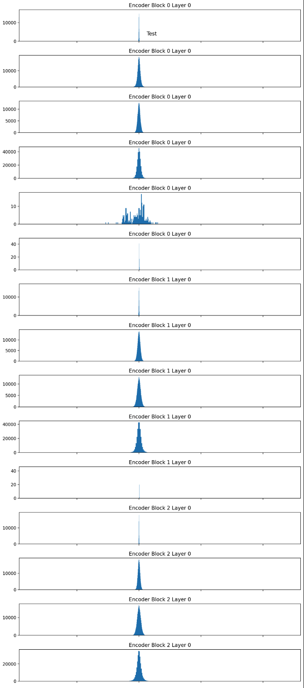
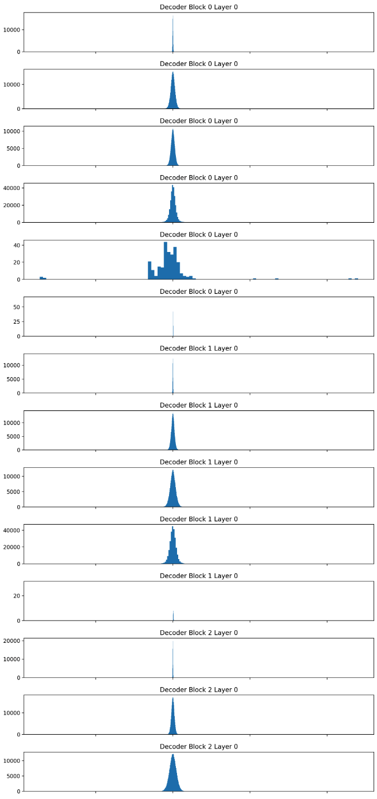
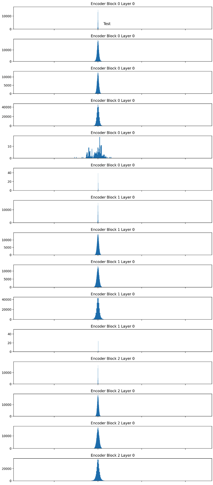
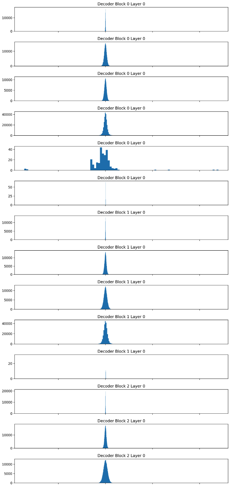

This paper explores automatically generating questions from text and evaluates their effectiveness. What caught our attention was the prospect of leveraging neural networks to automate a task we've been manually performing throughout this semester: crafting questions for assigned articles. This sparked our interest in investigating how we could develop a system to streamline and automate this process using AQG.
DocuBrain3 is an Automatic Question Generation (AQG) project designed to automatically generate questions from provided passages of text. By analyzing and understanding the content, our project aims to generate relevant and meaningful questions without human intervention. It takes passages of text as input and produces corresponding questions, facilitating enhanced comprehension and utilization of textual content. Inspired by the research paper "Downstream Transformer Generation of Question-Answer Pairs with Preprocessing and Postprocessing Pipelines," our approach leverages the insights from state-of-the-art methodologies outlined therein. Furthermore, we utilize the SQuAD dataset as a foundational resource, enriching our system's ability to generate questions with accuracy and relevance.
"Downstream Transformer Generation of Question-Answer Pairs with Preprocessing and Postprocessing Pipelines" introduces TP3, a system designed for generating question-answer pairs (QAPs) from given articles. The TP3 system utilizes a pretrained T5 transformer model to generate questions, employing preprocessing and postprocessing pipelines with various NLP tools and algorithms. This paper's methodology is very closely related to our project, DocuBrain3, as we also utilize pretrained transformer models and the SQuAD dataset to automate question generation from textual content. For fine-tuning, each QAP and its context from SQuAD are concatenated, with the question as the target. Learning rates are determined using the Cyclical Learning Rates method and adjusted based on evaluation metrics like BLEU, ROUGE, METEOR, and BERTScore, leading to the identification of optimal rates. T5-Large consistently outperforms T5-Base, with specific learning rates yielding the best results. The paper provides detailed measurement results for both models, leading to the development of T5-Base-SQuAD1 and T5-Large-SQuAD1, which demonstrate superior performance.
The preprocessing pipeline in TP3 is crucial for selecting appropriate answers and ultimately generating high-quality questions. It involves several steps:
Following question generation, postprocessing steps are employed to refine the quality of generated questions. Some examples include removing redundant information and single-word questions. The quality of QAPs generated by TP3-Base and TP3-Large is evaluated using standard automatic metrics and human judgments. T5-SQuAD1 demonstrates superior performance across ROUGE and METEOR metrics compared to other models, highlighting its effectiveness in generating high-quality QAPs. In conclusion, TP3 leverages pretrained T5 models and robust preprocessing/postprocessing pipelines to generate high-quality QAPs. Future enhancements could focus on refining transformer models and exploring alternative methods for context selection and question generation, advancing the capabilities of QAP generation. We aim to use these preprocessing and postprocessing steps and ideas as inspiration for our AQG project.
Preprocessing Steps:
Experimental Setup:
Model Performance Evaluation
After conducting extensive experiments with our DocuBrain3 model, we evaluated its performance across various metrics. Despite promising initial results, our model encountered challenges in consistently generating well-formed questions from given contexts. Figure 6 showcases an example of a properly generated question, highlighting instances where the model successfully generated coherent questions.
However, our analysis revealed that such occurrences were infrequent, with many generated questions lacking well-developed answers. Additionally, there were instances where the model produced text in languages other than English, as depicted in Figure 7.
We hypothesize that the preprocessed model often outputs translations because its weights are much closer to the t5-small model, as we are aware that the t5 series of models are very good in machine translation. This also may be why it sometimes outputs the context directly, as this is a part of the 'summarization' feature of the t5 model. More detailed notes about this can be found in our visualization notebook DB3_Interesting_NN_Visualizations.ipynb.
Metrics Evaluation
In our pursuit of understanding the model's performance, we employed comprehensive metrics evaluation. The DB3_Metrics notebook facilitated the comparison between preprocessed and unprocessed data, providing insights into the impact of preprocessing on model performance. Line graphs depicting validation loss and training loss for both preprocessed and unprocessed data are presented below.
As outlined in our methodology, we devised a manual metric strategy to evaluate the quality of generated questions. By categorizing outputs into distinct groups based on their characteristics, we gained valuable insights into the model's strengths and limitations.
Visualization and Analysis
Furthermore, visualizations from the DB3_Interesting_NN_Visualizations notebook shed light on the inner workings of our model. Weight visualizations, layer comparisons, and histograms provided valuable insights into the model's behavior and training dynamics.
Various visualizations are generated by our notebook DB3_Interesting_NN_Visualizations.ipynb. Our goal with creating these visualizations was to uncover any significant weight distributions between our fine tuned models and our base models. More visualizations can be seen within the notebook itself. Some examples are provided below.
Fine Tuned Encoder Weights
Fine Tuned Decoder Weights
t5 Small Encoder Weights
t5 Small Decoder Weights
As can be observed by the weight visualizations, there were no significant changes between our fine tuned model and the t5-small model. This may be due to our lack of training data and lack of access to resources that would allow us to train our models at a faster and more achievable rate. With more training data, we believe that we would be able to show a more significant change in weight distribution.
Examining the weight distribution alone may not yield substantial insights due to the vast number of weights; minor changes may not be discernible in the distribution graph unless they are significant. To address this limitation, we opted to visualize the disparities in values between the base model and the fine-tuned model to uncover more nuanced observations. The visualizations included in the graphs below are as follows, in sequential order:
These analyses were conducted on both t5-base and Zhang Cheng's fine-tuned model, which was derived from t5-base. The "Mean Differences Per Layer For Encoder/Decoder" histograms provide insights into the overall transformation of the model during training. By comparing these histograms to an "ideal" state, we can approximate the progress made towards achieving that ideal state. Additionally, it offers insights into the distribution of change across layers, aiding in assessing their individual contributions.
The "Largest Difference for Encoder and Decoder" histogram sheds light on the significance of each layer. Significant variations in specific layers may suggest the possibility of freezing less crucial layers without substantially impacting overall model accuracy or enhancement. Similarly, the "Smallest Difference for Encoder and Decoder" histogram serves a comparable purpose to the largest difference histogram but from the opposite perspective.
Overall, our experimental findings underscore the challenges and opportunities inherent in automatic question generation. While our model demonstrates potential, further refinement and optimization are required to achieve consistent and reliable question generation. By integrating insights from our experimental findings, we aim to drive future improvements and advancements in the field of automatic question generation. Through future iterative experimentation and analysis, we believe the capibilities and performance of our DocuBrain3 model could be greatly improved for broader applicability and impact.
While DocuBrain3 has demonstrated promising capabilities in automatic question generation, further improvements could be achieved with access to additional data and computational resources. With a larger and more diverse dataset, along with extended training duration, DocuBrain3 could potentially enhance the quality and coherence of the questions generated. Increased computing power would enable deeper model exploration and refinement, leading to a more nuanced understanding of language patterns and contexts. This has the potential to improve the relevance, complexity, and intelligibility of the questions generated, ultimately enhancing the overall utility and effectiveness of DocuBrain3 in educational and interactive learning settings.
By automating the process of question generation, we seek to provide a valuable tool for enhancing learning, testing comprehension, and promoting critical thinking. The potential applications of this technology range from educational settings, where it can aid students in studying and educators in assessing comprehension, to broader societal impacts, such as fostering a culture of lifelong learning and inquiry. The Socratic method, renowned for its emphasis on questioning as a pathway to deeper comprehension and critical thinking, serves as our inspiration for this project. Moving forward, future work could explore further refinements in question generation algorithms, integration with existing educational platforms, and empirical studies to evaluate the effectiveness of our approach in enhancing interactive learning outcomes.
[1] Cheng Zhang, Hao Zhang, Jie Wang. Downstream Transformer Generation of Question-Answer Pairs with Preprocessing and Postprocessing Pipelines Downstream Transformer Generation of Question-Answer Pairs with Preprocessing and Postprocessing Pipelines
[2] Manisha Divate and Ambuja Salgaonkar. Automatic question generation approaches and evaluation techniques. Automatic question generation approaches and evaluation techniques.
[3] Siti Fairuz Dalim, Aina Sakinah Ishak, and Lina Mursyidah Hamzah. Promoting Students’ Critical Thinking Through Socratic Method: The Views and Challenges. Promoting Students’ Critical Thinking Through Socratic Method: The Views and Challenges.
[4] Fabio Chiusano. A Full Guide to Finetuning T5 for Text2Text and Building a Demo with Streamlit. All you need to know to build a full demo: Hugging Face Hub, Tensorboard, Streamlit, and Hugging Face Spaces.
Mihir Dontamsetti
Michelle Lim